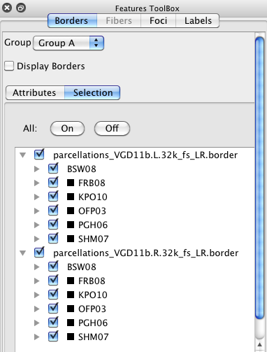

Borders
The Borders Tab in the Features Toolbox
contains options for display and selection of loaded and newly
created borders on brain surfaces.
- Display Borders toggles border
display on and off. When Border Mode
is turned on, Display Borders is turned on by default.
- Group: identifies the Border
group for the Active Tab. Tabs assigned to the same Group will
display the same borders with the same attributes.
- Borders Attributes contains
options for viewing borders.
- Contralateral check box toggles
on display of borders that are currently being displayed on
one hemisphere to be displayed on the contralateral
hemisphere (on top of that hemisphere's own displayed
borders, if any).
- Draw As sets the shape of the
border components (Lines, Spheres, Squares, Spheres and
Lines).
- Coloring sets the Class, Name, or Standard Color
as the border color source.
- Standard ColorSelects the color when Coloring is set to Standard Color.
- Line Diameter controls the
border thickness if line is selected as the border
component.
- Symbol Diameter controls the
size of the sphere or square symbol border components.
- Unstretched Lines is used
to correctly display a border from a 3D surface on a flat
surface when the border crosses a surface cut from
flattening. The distance indicates the limit for how much a
border can be stretched across a cut surface before it is
NOT displayed. Specifically, if the value of [(length of
border on flat surface) / (length of border of 3d
volume-interaction surface)] exceeds the Unstretched Lines
value then the border is NOT displayed.

- Borders Selection controls group
and individual display selection for borders. If a higher
level group is selected on or off, all borders below that
level will be similarly selected on/off. The All On/Off
buttons allow for quick toggling of all borders on or off.
